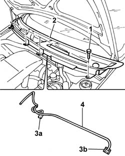

7210E22 R.R. WINDSCREEN BASE TRIM
- Path
- Procedures > 72 PANELS AND FRAME > 7210 REMOVING REFITTING > 7210E EXTERNAL PARTS > 7210E22 R.R. WINDSCREEN BASE TRIM
- Kind
- repair procedure (removal / refitting; the operation number is the code)
- Applies to
- all engines; all production periods
- Interactive page
- https://sloeber94.github.io/elrnDB-fPnd/en/#/2753356
Applies to: all engines; all production periods
 Removing
Removing
 Refitting
Refitting5050B34 windscreen wiper arm/s complete with blade - r+r
1. Undo the retaining bolts.
2. Release the windscreen base trim.
3. Extract the jets (3a) and (3b) and release the pipes from the fastening clips.
4. Remove the windscreen base trim.

Applies to: all engines; all production periods
Refitting
RemovingPlace the jets in their housings and secure the pipes to the fastening clips.
Place the windscreen base trim in position and tighten the fixing bolts.